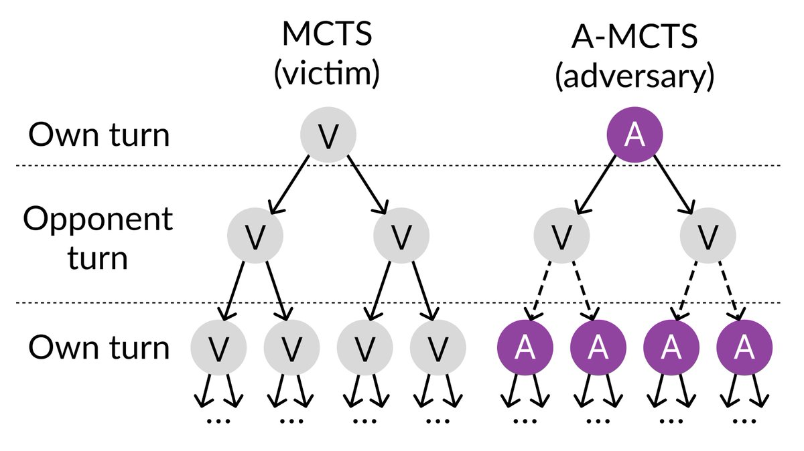

Adversarial Attack
Someone trained an adversial network to beat an existing superhuman AI, and then it found out how to beat that AI. The adversial network is different from normal Go programs in that it wasn't trained to play the best Go, instead it was trained to beat the specific victim AI. (e.g. AlphaZero) (https://twitter.com/farairesearch/status/1682150899853193216)

Figure 1: Adversarial training on KataGo using AlphaZero like algorithm
The key takeaway from this is that (https://twitter.com/ARGleave/status/1587875117798813697)
Our key takeaway is that even AI systems that match or surpass human-level performance in common cases can have surprising failure modes quite unlike humans. We'd recommend broader use of adversarial testing to find these failure modes, especially in safety-critical systems.